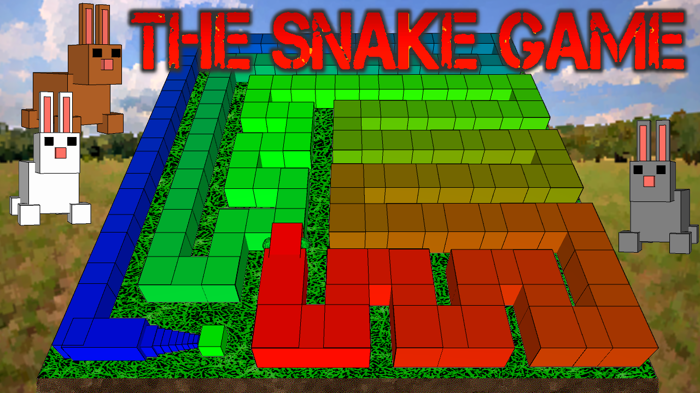

This project was a part of the Coding Train's series
called 'The Nature of Code'. The project was a small excersize that
I chose to expand upon. It is a small visual terrain generator to relax to.
This project was a part of the Coding Train's coding challenges. It is a small
rendering where the viewer is looking at sapce as they travel faster than the speed of light. An expanded version was made for the twitch streamer
Rand118 as a pause screen while he is away taking a break.
This project was a part of the Coding Train's coding challenges.
This fractal follows a simple rule, splitting each existing cube into 27 new cubes and removing all in contact with the x-, y- and z-axis each step.
I attemped to introduce a zooming effect and optimizing the process by removing cubes outside of view, with limited results.
This small fractal program follows a simple algorithm. Place three points, one for each corner. Place a point, at any location within the corners.
Pick a random corner point and the newest point. Place a point in the middle of a line going through the two points. repeat this process until the
fractal appears.
This was our first semester project. This project was a small educational game in connection with 'The Global Goals for Sustainable Development'.
The game is simple, collect trash and invasive spicies to clean the local ecosystem, while leaving native spicies alone. Picking up trash or fish will give the player
an informative textbox, explaining relevant context about said item. Items that are not native can be sold for currency, which can be used to upgrade inventory space,
health, air supply and movement speed. Every second air is depleted. Health can be lost by some fish and for each second the diver is out of air. Picking up bubbles
or surfacing to the shop will replenish both air and health. Items can be dropped and picked back up as pleased, so that players can retract incorrect actions.
The Game is a tile based game with random item spawns influenced in rarity by depth. It has a simple collision implementation based on the tile type, meaning air and dirt
tiles are non traversable. The map is generated using an image, where each pixel corrosponds to a tile, and the tile type is determined by color.
This allowed for a simple and effective map-editing. The end goal is to reach the highest possible score.